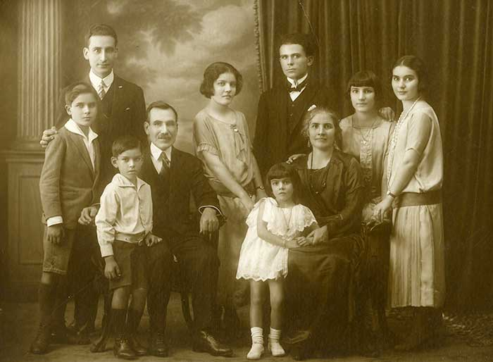
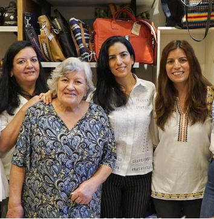
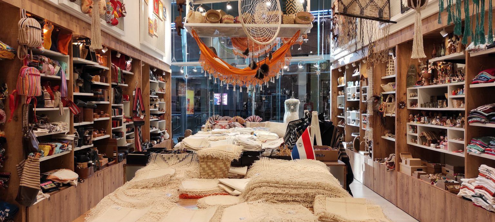
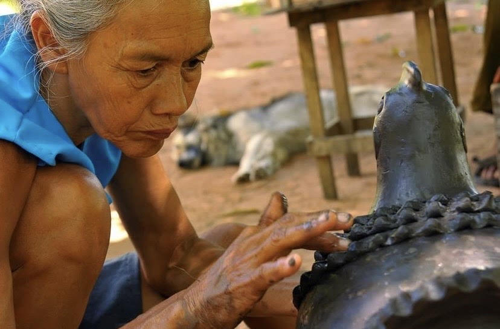
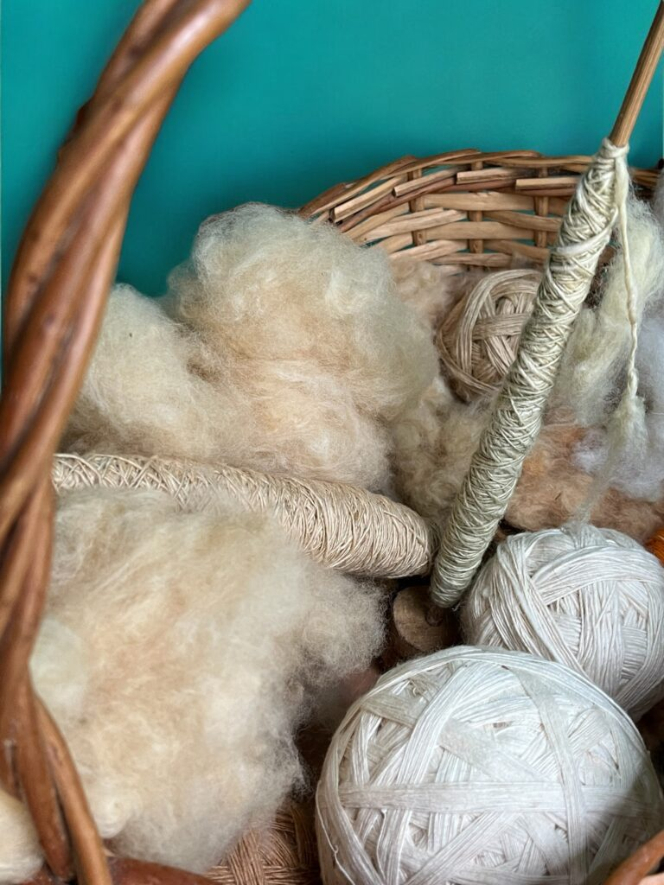

Nosotros
Más de cien años promoviendo la artesanía paraguaya.
Nuestra historia
En 1920 el emprendedor italiano Juan Bellassai fundó la Zapatería Over All. Con el correr de los años el rubro cambió a la venta de cuero, la talabartería y la importación de herrajes para los artículos de cuero fabricados por nuestros artesanos.
La empresa fue creciendo gracias al impulso de su fundador y de sus hijos, que incorporaron artículos hechos por artesanos de distintos puntos del país. Tanto Juan como sus hijos querían fomentar el arraigo a nuestras tradiciones y nuestro folclore.
Hoy Over All tiene dos sucursales, con artículos de cuero, barro, madera, ao po’i y filigrana. Y la tradición continúa: la cuarta generación de la familia ya forma parte de la empresa.



Misión
Buscamos preservar y promover la rica herencia cultural del Paraguay a través de la comercialización de auténticas artesanías, creadas por hábiles artesanos paraguayos que representan la diversidad de tradiciones y técnicas del país.
Nos comprometemos a ayudar a salvaguardar técnicas ancestrales transmitidas de generación en generación, para que sigan siendo una parte viva del patrimonio cultural paraguayo.
Impacto
Queremos ofrecer a nuestros clientes una experiencia de compra enriquecedora, donde cada adquisición cuente una historia única y cada diseño refleje la singularidad de la pieza, así como el talento, la paciencia y el arte de los artesanos locales.
Sustentabilidad
A lo largo de nuestra historia buscamos el equilibrio entre las personas, el medio ambiente y la prosperidad económica. Nuestras artesanías son elaboradas por artesanos de todo el Paraguay siguiendo principios de producción sustentable y responsable, con métodos tradicionales que logran una calidad superior.


La tradición hecha arte
Descubrí la belleza de lo artesanal con creaciones exclusivas. Tradición y diseño que transforman tu espacio con identidad.
Ir a la tienda